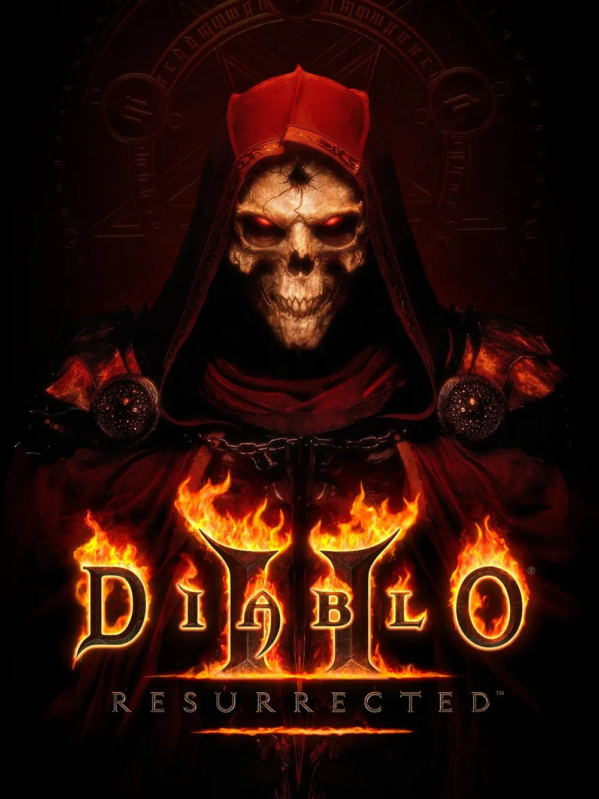

Diablo Ⅱ
Diablo II 는 Blizzard North 에서 개발 하고 Blizzard Entertainment 에서 Microsoft Windows , Classic Mac OS 및 OS X 용으로출시한 2000년 액션 롤플레잉 게임 입니다 . 어두운 판타지 와 공포 테마를 가진 이 게임은 David Brevik 과 Erich Schaefer 가 구상하고 디자인했으며, Max Schaefer와 함께 프로젝트 리더 역할을 했습니다.
디아블로 II 의 스토리는 네 개의 장 또는 "막"으로 구성되어 있으며, 확장팩 '파괴의 군주 '에서는 다섯 번째 장인 제5막이 추가되어 제4막의 스토리가 이어집니다. 각 막은 미리 정해진 진행 경로를 따르지만, 주요 지역 사이의 황야와 던전은 무작위로 생성됩니다. 플레이어는 각 막에 있는 일련의 퀘스트(제4막은 세 개, 총 여섯 개)를 완료하여 스토리를 진행합니다.
✔ 디아블로 II Resurrected : 오리지널 버전과 확장팩을 리마스터한 Diablo II: Resurrected는 2021년에 Windows, PlayStation 4 , PlayStation 5 , Xbox One , Xbox Series X 및 Series S , Nintendo Switch 로 출시되었습니다 . 리마스터 버전은 업데이트된 그래픽, 더욱 부드러운 게임 플레이, 게임 컷신 재렌더링을 포함하며 , 다양한 플랫폼 간의 크로스 프로그레션을 지원합니다.